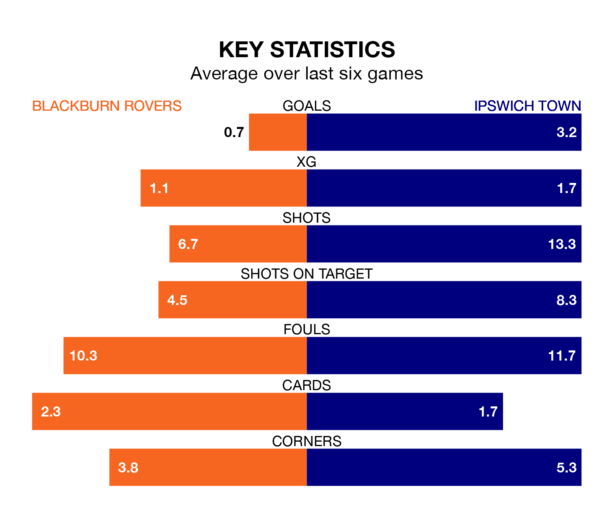

Ipswich Town are strong favourites to take all three points despite Blackburn Rovers' home advantage in Friday's late match at Ewood Park.
*Betting Company* are offering odds of 1.98 on Ipswich sealing the win, with the visitors sitting third in EFL Championship table.
Blackburn, who are 17th in the league and 39 points behind the Blues, are priced at 3.3 to win. A draw is set at 3.7.
With 80 goals in 38 games so far this season, Ipswich are the league's highest scorers with 2.1 goals per game. And they are conceding fewer than average, letting in 49 goals at a rate of 1.3 per game.
Blackburn, meanwhile, are below average scorers, with 1.3 goals per game, compared to a league average of 1.4. They have conceded 1.7 goals per game.
In Samuel Szmodics, Rovers have the league's sharpest shooter so far this season. He has notched 21 goals in 36 appearances.
Town's top scorers, with 12 goals each, are Nathan Broadhead and Conor Chaplin.
In the last 10 years, Blackburn and Ipswich have played each other on 10 occasions. Blackburn won four of them, Ipswich three, and they drew three times.
On average, Blackburn scored 1.7 goals and the Blues 1.4 in those matches.
Their last meeting was on September 23, when Ipswich won 4-3 at home.
The home side are in disappointing form in EFL Championship, with no wins and five draws from their last six games.
With five wins and one loss over that period, the Blues' form is much better – they have taken 15 points from 18, compared to Blackburn's five.
Blackburn's last match was on March 16, a 0-0 draw against Middlesbrough.
Ipswich beat Sheffield Wednesday 6-0 last time out, also on March 16, with Ali Al-Hamadi (two), Omari Giraud-Hutchinson (two), Broadhead and Cameron Burgess on the scoresheet.
Updated: 12:39 (UTC), 26/03/24